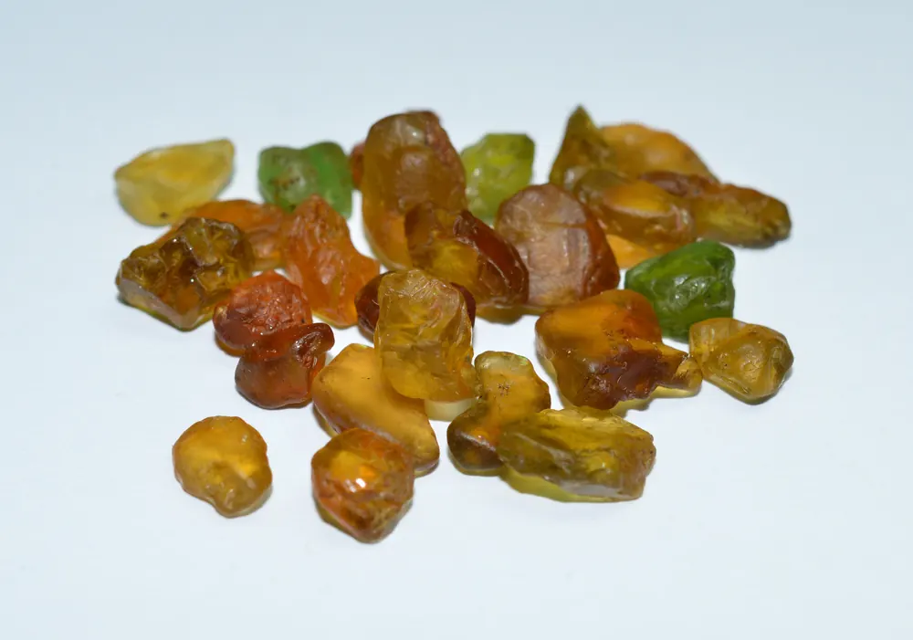

蛋白石：彩虹凝固的火焰
蛋白石把整條彩虹鎖進石頭——變彩的祕密，是數百萬顆二氧化矽微球的奈米工程。

核心定義
蛋白石（opal）是含水二氧化矽（SiO₂·nH₂O）——它不是晶體，是「非晶質」寶石（矽膠石）。硬度 5.5–6.5、折射率 1.44–1.45、比重 2.0（輕）。它的招牌是「變彩」（play-of-color）——彩虹般的光在表面流轉。
品種：黑蛋白石（深色底、變彩最豔、最貴）、白蛋白石（淺色底）、火蛋白石（橙紅、墨西哥）、水晶蛋白石（透明底）。「變彩」的品質看：顏色數量、鮮豔度與分布。
特徵與分類
| 品種 | 底色 | 變彩 | 市場 |
|---|---|---|---|
| 黑蛋白石 | 深灰黑 | 最豔 | 頂級天價 |
| 白蛋白石 | 白 | 柔和 | 主流 |
| 火蛋白石 | 橙紅 | 部分無變彩 | 墨西哥 |
| 水晶蛋白石 | 透明 | 變彩通透 | 高端 |
黑蛋白石（澳洲閃電嶺）是蛋白石的王者——深色底讓變彩「迸發」出來，單克拉價格可達數千美元。火蛋白石（墨西哥）以橙紅體色取勝（未必有變彩）。
科學原理
變彩的光學：蛋白石由數百萬顆二氧化矽微球（直徑 150-300 奈米）規則排列成「光子晶體」——光線在微球間干涉繞射，按角度分解成彩虹色。微球大小決定顏色：球大→紅橙、球小→藍紫。
鑑定：比重 2.0（輕）、折射率 1.44–1.45——與玻璃仿品（比重高、無變彩結構）、人造蛋白石（變彩呆板）區分。蛋白石含水（2–10%）——怕熱怕乾（脫水會「死」、失去變彩），「死蛋白石」是保養失敗的悲劇。
鑑定與鑑別方法
- 看變彩：流動彩虹 vs 呆板仿品
- 折射儀：1.44–1.45
- 掂比重：2.0 很輕
- 查含水量：怕乾怕熱
- 證書：天然/人造/合成
市場行情與保養建議
行情：黑蛋白石（澳洲）頂級每克拉數千美元、白蛋白石親民、火蛋白石（墨西哥）受收藏家喜愛。蛋白石的價格看「變彩的鮮豔度＋底色」——黑底豔彩是王者。
選購：看變彩的「顏色數量與鮮豔度」；確認天然（vs 合成蛋白石）；注意保養（怕乾怕熱怕碰撞）——蛋白石是「需要照顧的彩虹」。
常見誤區
蛋白石脫水或受熱受撞會裂——但不是「自己裂」。正確保養（避熱、避乾、防撞）的蛋白石可以保存很久。
「蛋白石帶來厄運」是 19 世紀小說的虛構（小說主角被詛咒的蛋白石）——實際上市場與王室都愛蛋白石。
冷知識
含 2–10% 的水——溫度與濕度會影響它。蛋白石是寶石界的「濕度計」。
二氧化矽微球的規則排列是天然光子晶體——大自然在幾百萬年前就完成了奈米工程。
反直覺觀點
黑蛋白石的重量輕如塑膠，價格卻貴如鑽石——價值由變彩決定，不由密度決定。
脫水讓變彩消失（微球間距改變）——補水可以救回部分。蛋白石的生死，掌握在濕度手上。